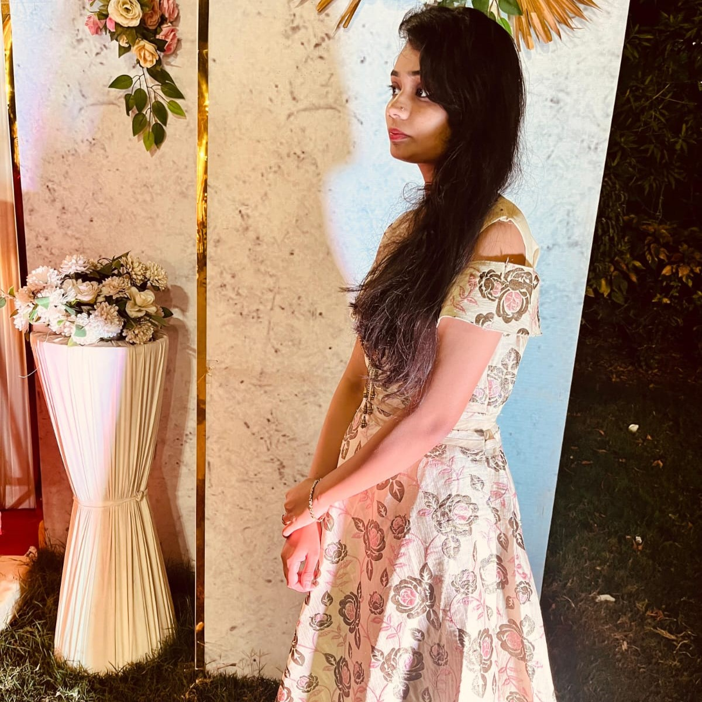

About Me
CHETNA KATOLE
I'm Chetna Katole, a passionate engineering student specializing in Electronics and Telecommunication (ETC) in Priyadharshini College of Engineering,
with a commitment to excellence and innovation. My journey has been shaped by a blend of academic pursuits, professional experiences, and personal interests, all contributing to my growth and development.
Having completed my internship at YugAlpha Pvt Ltd, I've had the invaluable opportunity to gain hands-on experience in the tech industry. During my time there, I delved into projects that allowed me to apply my theoretical knowledge in practical settings, honing my skills in areas such as [Web Developing & Java].
Currently pursuing my engineering degree in Electronics and Telecommunication, I am deeply engaged in exploring subjects that bridge the realms of circuits, communication systems, and information technology. This academic journey fuels my curiosity and provides me with a solid foundation to tackle real-world challenges in the field.
Outside of academics and professional endeavors, I am an enthusiastic fitness enthusiast, believing in the importance of maintaining a healthy lifestyle to support my personal and professional growth. Whether it's hitting the gym, going for a run, or practicing yoga, I prioritize physical well-being as a means of nurturing both my body and mind.
In my leisure time, I indulge in various hobbies and interests, Designing & Badminton, finding joy and fulfillment in pursuing diverse activities that challenge me and expand my horizons.
As I continue on my journey, I remain committed to leveraging my skills and experiences to make a positive impact in the world. Whether it's through my academic pursuits, professional endeavors, or personal interests, I strive to contribute meaningfully to the advancement of technology and the betterment of society.
mail: chetnaravikatole@gmail.com
tel: +91 9960907870
Technical Skills
Web Developer
C, C++
JAVA
Projects Done
My Project :